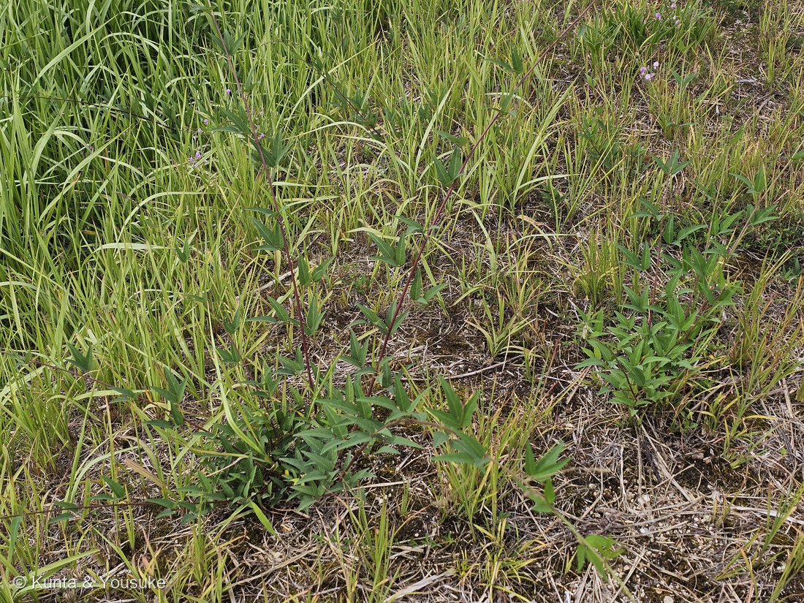
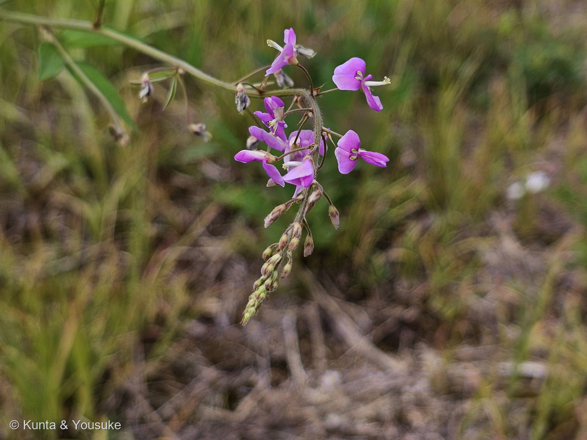
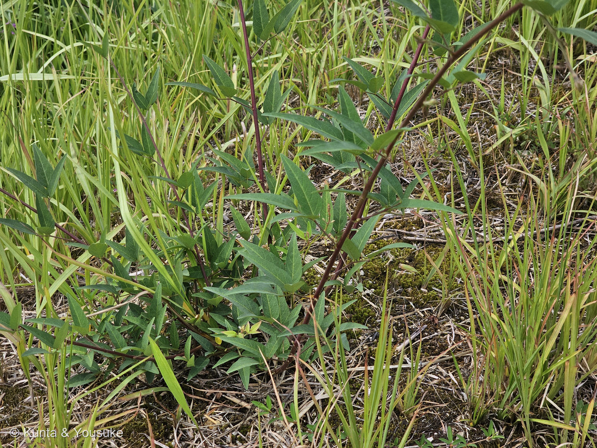
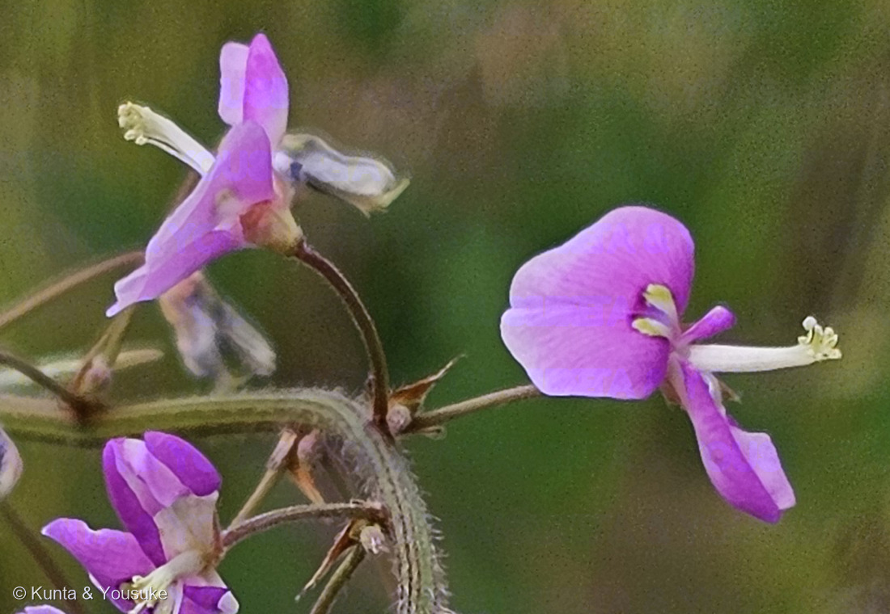
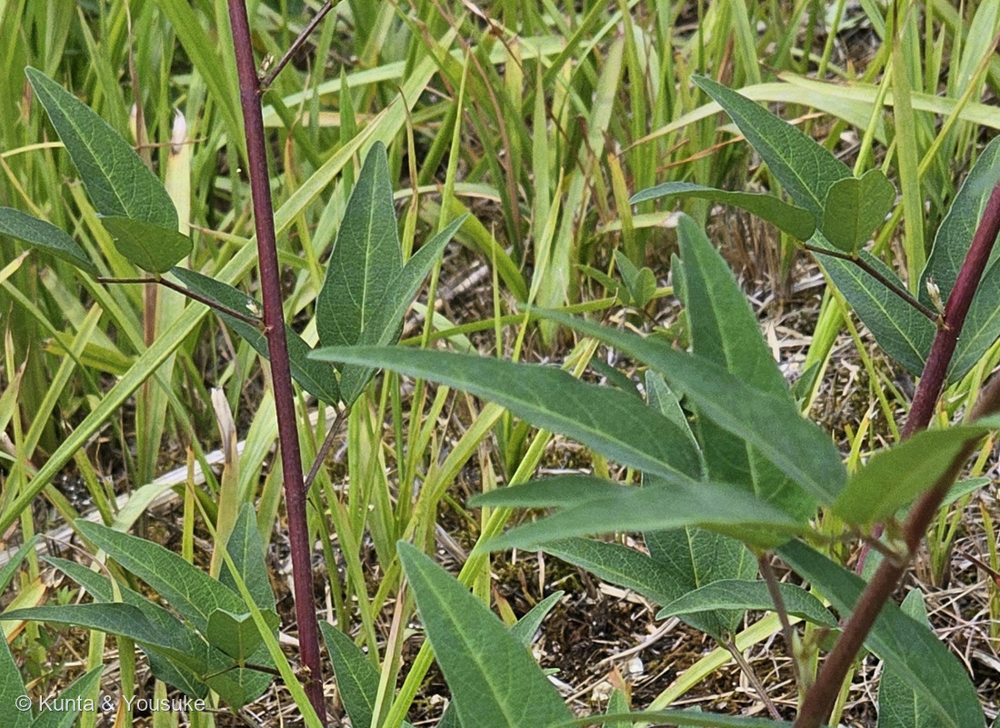

地図を読み込んでいるよ…
🔍 写真も地図も、押しているあいだ拡大して見られるよ（スマホは指を置いてすこし待ってね）。
🌍 の地図＝この子がもともと自生している場所を緑に。北アメリカ。日本には帰化していて、道端や荒地でふつうに見られる。
⭐⭐ふるさとは北アメリカだよ＝日本には帰化していて、道端や荒地でふつうに見られる。⚠⚠この緑も、ほんとうより広く見えている＝アメリカ合衆国の東のほうが中心なのに、地図は国までしか塗れないから。⭐⭐⭐おまけの「本家」のヌスビトハギは、反対に日本をふくむ東アジアの在来の子＝同じ道ばたで、地球のあちらとこちらから来た2人がならんでいることになる。⚠日本は塗っていない＝帰化した外来種だからだよ。
⚠ 地図は国（日本と中国だけ県・省）までしか塗れないから、ほんとうの分布より広く見えていることがあるよ。地図はだいたいの場所。正確なところは、上の文を見てね。
アレチヌスビトハギ（荒地盗人萩）
Desmodium paniculatum (L.) DC.
⚠おまけの「ヌスビトハギ」とは、属からちがう別の子だよ
マメ科 · Fabaceae（アコウマイハギ属 Desmodium · マメ目 Fabales）── ⭐マメ科は、この子を入れて図鑑に8人（007 シロツメクサ・009 オジギソウ・049 アルファルファ・126 キングサリ・127 シロバナフジ・145 クズ・318 トキワネム）
燻太さんの言葉「花は濃いピンクで雌しべ？が突き出ているね。葉は奇数の複葉で、株本から何本も茎が出ているよ。三矛の槍の先端みたいな葉っぱだけど、この子はからだの大きさの割に葉っぱはまばら。この葉の枚数でも十分成長できるからなのかな？」── ⭐「ヌスビトハギ?」のはてなマークから、落とす作業をはじめたよ
⭐⭐⭐⭐⭐ 同定について ── 決め手は、花のまんなかの「黄色い点2つ」
⭐⭐燻太さんは「ヌスビトハギ?」と、はてなマークつきで教えてくれた。⭐だから今回は、合っているものを数えるんじゃなくて、ほかを落とせるかからはじめたよ（087と、きょうの318で覚えたこと）。
- ⭐⭐⭐⭐⭐出典が、アレチヌスビトハギについて写真で確かめられる決め手を2つ書いていた。
- ①「旗弁の基部に黄色の点紋が2個つく」──⭐写真④の大きな花の中心に、黄色い点が左右にならんでいる。
- ②「花はしぼんでくると青色に変わる」──⭐写真④の左のしおれた花が、灰青色になっている。⭐ふつうの花のしおれかたとちがうんだ。
- ⭐⭐そのほかも、ぜんぶ合う。
- 3小葉／小葉は「長さが幅の3〜8倍、披針形〜長円形」──⭐写真の小葉は3〜4：1くらい。
- 花は長さ6〜8mmと大きい（⚠本家のヌスビトハギは3〜4mm）。
- 花序は「大きく、分枝し、長さ10〜40cm」──⭐写真①で、細い花序が長く伸びているのが見える。
- 花期7〜9月／道端に生える──⭐撮影は9月5日、通勤路の道ばた。
- ⭐落とせた相手
- ヌスビトハギ（本家）＝⚠属からちがう（Hylodesmum）。小葉が卵形で幅が広く、葉脈が縁まで届き、花が3〜4mmと小さく淡紅色、小節果は2個でくびれが深い。
- フジカンゾウ＝小葉が5〜7枚の羽状複葉。⭐写真は3小葉だから落ちる。
- ハギ属＝さやが1節でくっつかない。花序が葉のわきから出る。
- ⏳⚠そのうえで、正直に。──いちばん確かな決め手は小節果（さや）の数なんだ。⭐アレチは(2)3〜6個でくびれが浅い／本家は2個でくびれが深い。⚠でも撮影の日は、まだつぼみと花ばかりで、さやができていなかった。⭐上の2つの決め手で言いきれると思うけれど、さやを見ればもっと確かになるよ。
⭐⭐⭐⭐ 名前の由来 ── 盗人の、足あと
⭐「ヌスビトハギ（盗人萩）」の名の由来には、2つの説があるんだ。
- ⭐⭐⭐①果実が、盗人の足あとに似ているから。──日本語版Wikipediaは牧野富太郎の説として、こう伝えている。⭐むかしの盗人は音を立てないように、足の外側で歩いた。⭐その足あとの形が、半月形の小節果がならんだ形にそっくりだ、というんだ。
- ⭐⭐②知らないうちに、種が人にくっついてくるから。──三河の植物観察はこちらを採っていて、「果実の表面の鉤状毛が衣服に付着しやすい特徴に由来」と書いている。
- ⭐どちらか一方を選ばずに、両方書いておくね（240で決めた形）。⭐どちらも「盗人」の姿が目に浮かぶのが、いいなと思う。
- ⭐⭐そして「アレチ（荒地）」は、この子が荒れ地や道端に生えるから。⭐北アメリカから来て、日本の道ばたにすっかり住みついた子だよ。
- ⭐学名の paniculatum は「円錐花序の」という意味。──⭐あの、長く伸びて枝分かれする花序のことだね。
⭐⭐ この植物のこと
- マメ科アコウマイハギ属の草。⭐北アメリカ原産で、日本に帰化している。
- 高さ60〜120cm。⭐茎は「普通、上部で分枝し、無毛またはほぼ無毛」。⭐写真では濃い赤紫色をしているよ。
- 葉は3小葉。小葉は「質が薄く、長さは幅の3〜8倍、披針形〜長円形、長さ10cm×幅2.5cm・以下」。⚠「葉脈が縁まで届かない」のも、この子の目じるし。
- 托葉は細く、長さ2〜4mm。
- 花序は「大きく、分枝し、長さ10〜40cm」。
- 花は長さ6〜8mmの蝶形花。⭐旗弁の基部に黄色の点紋が2個。⭐しぼむと青色に変わる。
- 小節果は(2)3〜6個、ほぼ三角形で長さ5〜7.5mm×幅3.5〜4.5mm。くびれは浅い。⭐⭐「小節果には鉤状毛があり、マジックテープのように衣服にくっつく」。
- 花期は7〜9月。
⭐⭐⭐ 燻太さんの問い ── 「この葉の枚数でも十分成長できるからなのかな？」
⭐⭐燻太さんは、こう書いてくれた。「三矛の槍の先端みたいな葉っぱだけど、この子はからだの大きさの割に葉っぱはまばら。この葉の枚数でも十分成長できるからなのかな？」
- ⭐まず、燻太さんの見たとおりだよ。──写真①を見ると、高さ1mちかくある茎に対して、葉は本当にまばら。⭐茎のほうがずっと目立つ。
- ⚠⚠そして正直に言うと、「なぜまばらでいいのか」を書いた出典は、ぼくには見つけられなかった。⭐だから、ここから先はぼくの読みだと分けて書くね。
- ⭐手がかりになりそうなことが、2つある。
- ⭐⭐①出典は、小葉を「質が薄く」と書いている。──⭐薄い葉は、同じ材料でも広い面積をつくれる。⭐枚数が少なくても、光を受ける面はかせげるのかもしれない。
- ⭐⭐⭐②マメ科だということ。──⭐007 シロツメクサや049 アルファルファで書いたとおり、マメ科の多くは根粒菌と手を組んで、空気中の窒素を自分のものにできる。⭐⭐葉をたくさん作るには窒素がいる。⭐その窒素を自前で用意できるなら、やせた荒れ地でも立っていられる。
- ⚠でも、この2つを「だからまばらでいい」とつなげたのは、ぼくの整理だよ。⭐出典がそう書いていたわけじゃない。
- ⏳⭐確かめる手もある。──同じ道の、日かげの株と日なたの株で、葉のつきかたがちがうか見てみるとか。⭐燻太さんの問いは、まだ開いたままにしておくね。
⭐⭐⭐ 名前は同じ「ヌスビトハギ」なのに、属がちがう
- ⭐⭐この子（アレチヌスビトハギ）は Desmodium（アコウマイハギ属）。⭐おまけの本家（ヌスビトハギ）は Hylodesmum（ヌスビトハギ属）。
- ⭐でも、むかしはどちらも Desmodium だった。──本家のほうが、あとから Hylodesmum という別の属に移されたんだ。
- ⭐⭐つまり「ヌスビトハギ」という和名の本家のほうが、属から出ていったことになる。⭐317 ムスカリで見た「科の引っ越し」の、属のばんだね。
- ⚠だから、この2人は「同じ属の兄弟」ではなく「名前が似ているだけの、近い他人」。⭐見分けるときは、そこを覚えておくと迷わないよ。
⭐⭐ ひっつき虫が、図鑑に増えていく
- ⭐⭐この子はひっつき虫だよ。──小節果の鉤状毛が、マジックテープのように服にくっついて、知らないうちに運ばれる。
- ⭐315 キバナセンニチコウのおまけにしたイノコヅチも、秋のひっつき虫。⭐そしてこの子のおまけのヌスビトハギも、もちろんそう。
- ⭐⭐科はぜんぶちがうのに（ヒユ科・マメ科）、「動物にくっついて運んでもらう」という同じ答えにたどりついている。⚠この整理はぼくのものだよ。
- ⏳⭐秋にズボンにくっついてきたら、どの子か見分けてみようね。──⭐まるくてイガイガならイノコヅチ、平たい半月がならんでいたらヌスビトハギのなかまだよ。
出典：学名（Desmodium paniculatum (L.) DC.）・マメ科アコウマイハギ属・和名アレチヌスビトハギ（荒地盗人萩）・北アメリカ原産で日本に帰化し道端で普通・高さ60〜120cm・茎は普通上部で分枝し無毛またはほぼ無毛・葉は3小葉・小葉は質が薄く長さは幅の3〜8倍で披針形〜長円形・長さ10cm×幅2.5cm以下・葉脈が縁まで届かない・托葉は細く長さ2〜4mm・花序は大きく分枝し長さ10〜40cm・花は長さ6〜8mmの蝶形花で旗弁の基部に黄色の点紋が2個・花はしぼんでくると青色に変わる・小節果は(2)3〜6個でほぼ三角形、長さ5〜7.5mm×幅3.5〜4.5mm、くびれが浅く、鉤状毛がありマジックテープのように衣服にくっつく・花期7〜9月は三河の植物観察「アレチヌスビトハギ」。おまけのヌスビトハギ（Hylodesmum podocarpum subsp. oxyphyllum・旧属名 Desmodium・日本全土から東アジアに分布・道端や草地や林縁に普通・高さ60〜120cm・3出複葉で小葉は卵形・花序は細長く花はまばら・花は淡紅色で長さ3〜4mm・小節果は2個でくびれが深い・鉤状の微細な毛が密・花期7〜9月・アレチヌスビトハギとの見分け）は三河の植物観察「ヌスビトハギ」。和名の由来（牧野富太郎の説＝むかしの盗人は音を立てないよう足の外側で歩き、その足あとに果実の形が似る／種が知らないうちに人にくっつく）・小節果が半月形でめがねのように見えること・鉤状の構造で衣服や動物の毛につくこと・アレチヌスビトハギは近年帰化した背の高い種で花も果実も大きいことは日本語版Wikipedia「ヌスビトハギ」。⭐マメ科と根粒菌の話は007 シロツメクサと049 アルファルファのページに書いたもの。⭐小葉の長さと幅の比を写真の中で測ったこと（3〜4：1）、「薄い葉」と「マメ科の窒素」を並べて燻太さんの問いに答えようとしたこと、そして「ひっつき虫が科をまたいで同じ答えにたどりついている」という整理は、ぼくの観察とぼくの読みだよ。